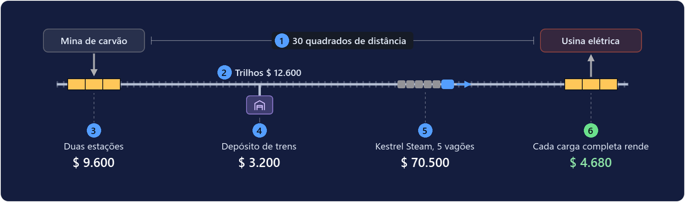

Início rápido
Sua primeira rota lucrativa, em seis passos.
Você recebe por levar carga até onde ela é necessária. Um trem de carvão é o jeito mais seguro de começar: seis passos.
- Encontre um par. Pressione M para ver o mapa do mundo e encontre estas duas, a 20 a 40 quadrados uma da outra: Mina de carvão e Usina elétrica.
- Assente os trilhos. Pressione 3 para escolher Trilhos e arraste de uma à outra. A nota ao lado do mouse mostra o preço, ou o que está errado.
- Construa duas estações. Pressione 5 para escolher Estação de trem e arraste três quadrados sobre os trilhos em cada ponta. A nota precisa dizer Fornece: Carvão na mina e Aceita: Carvão na usina.
- Adicione um depósito. Em Ferrovia, escolha Depósito de trens e clique em terreno plano ao lado dos trilhos. R gira a porta para eles.
- Compre um trem. Pressione B: Trens, Kestrel Steam, Carvão, 5 vagões. Adicione a estação da mina e depois a da usina, marque Esperar carga completa na primeira parada e compre.
- Veja funcionar. Você ouve uma moeda a cada entrega, e o que ela pagou sobe flutuando sobre o veículo. Quando o carvão se acumular na mina, um segundo trem precisa antes de um desvio: numa via única sem ele, os dois trens colidem. Veja Desvios.


Algo não funciona? Veja Solução de problemas. Para entender por que dá dinheiro, leia Como o jogo funciona.
Quanto custa
| Você precisa de | Preço |
|---|---|
| 30 quadrados de trilhos | $ 12.600 |
| Duas estações de 3 quadrados | $ 9.600 |
| Depósito de trens | $ 3.200 |
| Kestrel Steam com 5 vagões | $ 70.500 |
| Total | $ 95.900 |
| Cada carga completa de 150 toneladas rende | $ 4.680 |